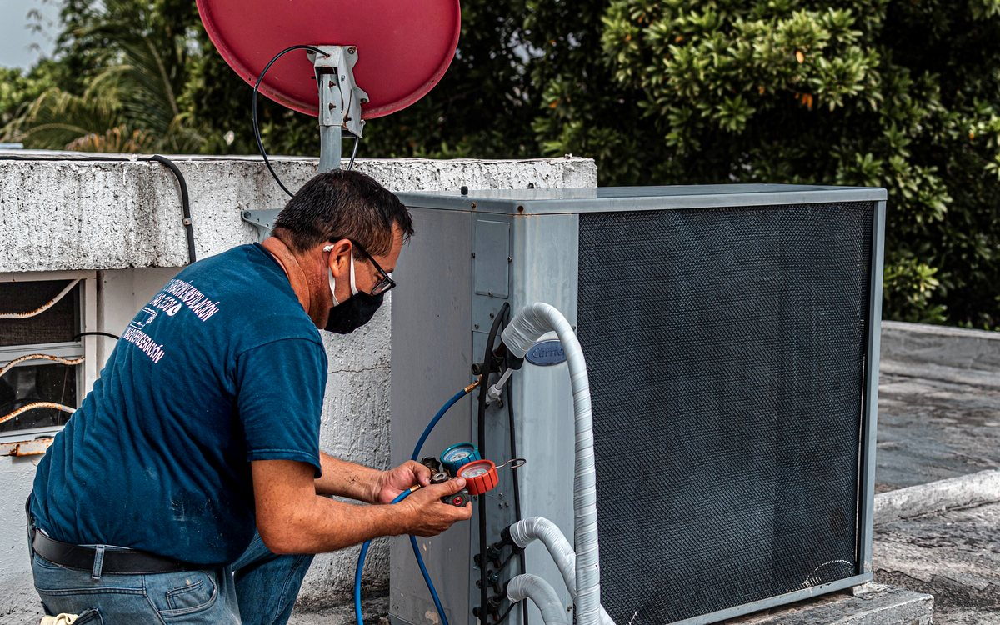

AC Gas Filling: Why Leak Diagnosis Comes First
AC refrigerant is part of a sealed system. A correctly installed unit should not need routine gas topping up simply because a season has passed. When refrigerant is low, the useful question is where it escaped and whether the leak can be corrected before refilling.

Step-by-Step Checks
When Professional Diagnosis Is Needed
Avoid repeated topping up without diagnosis. Ask what refrigerant the equipment requires, whether leakage signs were found and what work is included. The final recommendation depends on equipment age, leak location, repairability and compressor condition.
Questions About This Problem
Does every AC need gas filling each year?
No. Refrigerant works in a sealed system, so recurring low gas normally requires leakage diagnosis.
Can gas be filled without vacuuming?
The correct process depends on the repair, but evacuation is generally important after the sealed system has been opened.
Why can an AC still cool poorly after gas filling?
Airflow restriction, dirty coils, electrical problems or compressor issues may still be present.